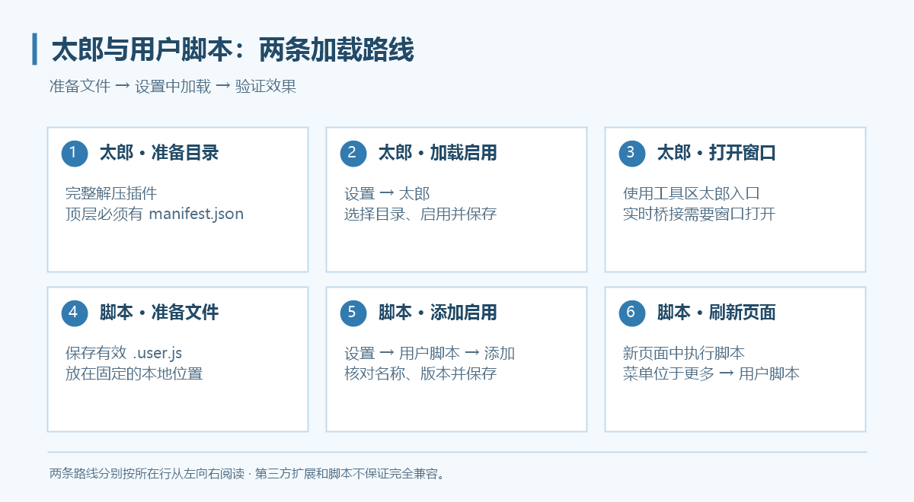
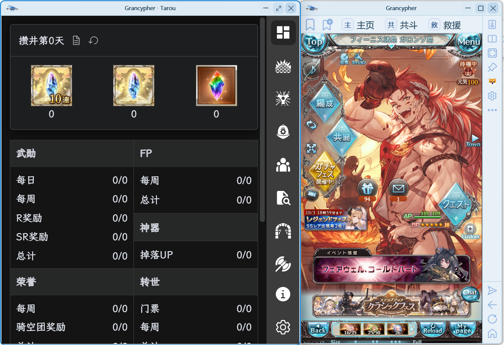

太郎与用户脚本
太郎以本地解压扩展的方式加载；用户脚本以本地 .user.js 文件的方式添加。二者有独立的设置入口。

加载太郎
- 准备太郎的解压目录，确认所选目录顶层包含
manifest.json。 - 打开 设置 → 太郎，通过添加入口选择目录，并启用插件。
- 保存设置；若未加载，按提示或手动重启程序。
- 使用工具区太郎按钮打开太郎窗口，或使用设置页提供的太郎窗口入口。
不要选择压缩包、插件目录的上一级目录或仅包含部分文件的目录。原插件目录请保留；移除加载项不会删除它。

窗口吸附与置顶
在“设置 → 太郎”选择窗口吸附方式。太郎记忆当前账户配置中上次关闭前的普通窗口大小，吸附时保持自己的高度。
“设置 → 外观 → 边缘空间不足时，附属面板自动换边”默认开启。关闭后保持选定侧的贴边关系与宽度，空间不足时可能有部分窗口超出屏幕。
需要跟随主窗口置顶时，右键主窗口图钉，勾选“太郎窗口一起置顶”。
实时数据与兼容范围
程序通过兼容桥接更新 Boss 血量、状态、特殊槽、贡献与战斗结束信息，目前需要太郎窗口保持打开。窗口关闭时不要期待桥接持续更新。
太郎原生“开启侧边栏”和“开启窗口栏”右键入口在 Grancypher 中隐藏，请使用工具区太郎入口。需要网页右键菜单时，在“设置 → 常规”启用。
WebView2 的扩展接口与 Chrome 有差异，不能保证所有太郎版本完全兼容。加载失败时先核对目录、重启，再按诊断流程收集日志。
添加用户脚本
- 将脚本保存为本地
.user.js文件，并放在不会随意移动的目录。 - 打开 设置 → 用户脚本 → ＋ 添加，选择文件。
- 确认列表显示名称、版本与文件地址，勾选启用。
- 点击“应用”或“保存并关闭”。
- 刷新目标网页或重新导航，使新脚本在新页面中生效。
脚本需包含有效的 ==UserScript== 元信息块，单个脚本不能超过 2 MB。只添加你信任的脚本。
更新、停用与菜单
| 想做什么 | 操作 |
|---|---|
| 更新文件内容 | 修改本地文件后，在列表点击“重新读取本地文件”，保存并重新加载页面 |
| 暂时停用 | 取消启用，保存并重新加载页面 |
| 删除加载项 | 点击删除并确认，保存设置 |
| 使用脚本命令 | 打开工具区“更多 → 用户脚本”，选择脚本注册的菜单命令 |
重新读取会读取本地脚本及依赖；程序不提供脚本自动更新。列表保留文件地址，移动文件后需重新选择或添加。
油猴兼容说明
当前支持部分 GM_*／GM.* 功能，例如样式、值存储、资源读取、打开标签和菜单命令，也处理 @match、@include、@exclude 等元信息。完整 Tampermonkey API 尚未实现，例如依赖 GM_xmlhttpRequest 的脚本不能据此认为可直接使用。
外部依赖只支持符合限制的 HTTPS 地址或脚本文件夹内相对文件；不支持任意本机绝对路径依赖。依赖总数最多 24 项、每项最多 2 MB、合计最多 12 MB。报错时检查依赖地址、文件位置和脚本所需 API。
如果有脚本无法正常运作的情况，请将脚本源文件与问题一同提交，作者会评估适配必要性。
新版兼容补充
- 太郎新参战者资料会实时转发并按玩家 ID 去重，不再需要手动刷新才能出现；重复参战者消息不会阻断 Boss 血量与贡献更新。升级后重启以加载新版桥接。
- 太郎在 Grancypher 中始终通过宿主静默接收战斗数据，不受“扩展静默调试”开关影响；实时桥接仍需太郎窗口保持打开。
- 本地用户脚本加载器已修正 jQuery 依赖与网页 AMD／CommonJS 环境的冲突，脚本执行和菜单回调错误会写入日志。
- 内置脚本新增
GM_audio／GM.audio的网页静音、状态读取及变化监听接口，需声明对应@grant；作用涵盖 HTML 媒体和 Web Audio 输出。只想静音游戏时可直接使用“设置 → 常规 → 游戏窗口静音”。
使用油猴扩展的另一条路线
0.4.0 起，可以通过Chrome 插件支持加载 Tampermonkey 等扩展，再由扩展管理脚本。它与本页的本地 .user.js 加载器是不同入口，权限和菜单也由各自入口管理；不要在两处重复启用同一脚本。内置加载器的 GM 接口限制不等于扩展自身的全部接口范围，扩展兼容性仍以具体版本为准。